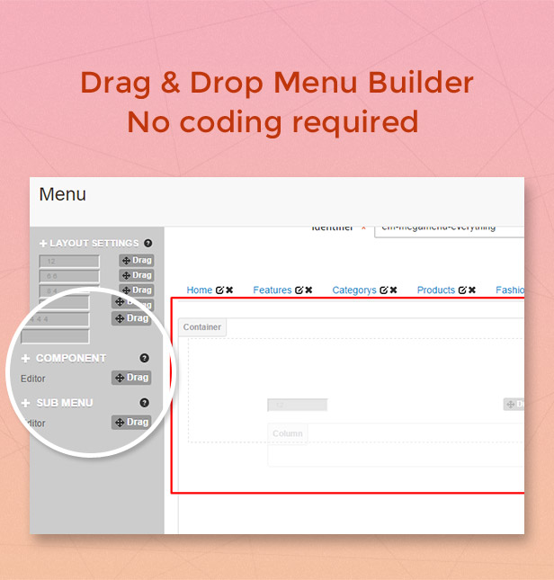
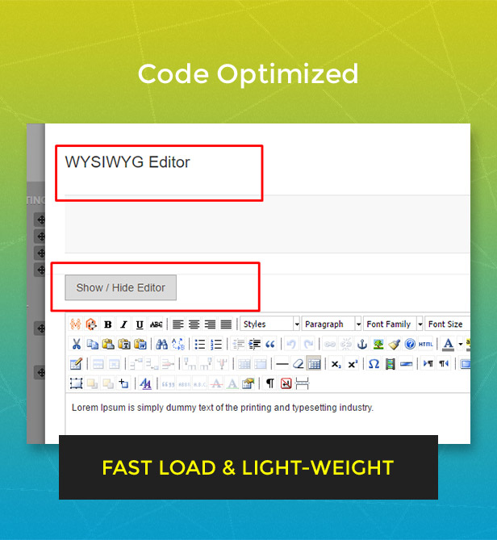
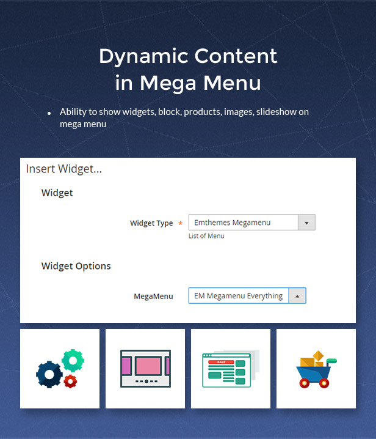
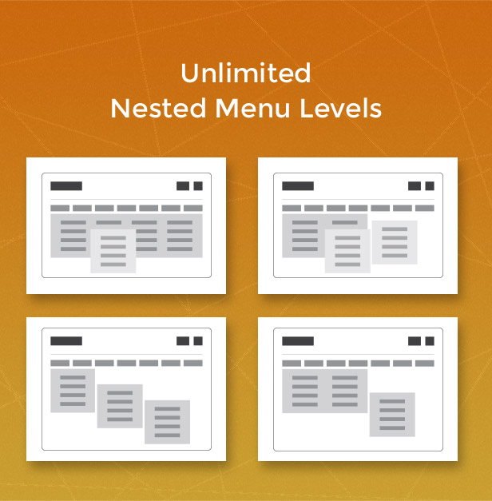
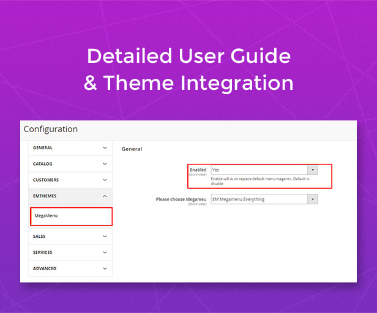

EM MegaMenu - Magento 2 Mega Menu Extension
EM MegaMenu is a Magento 2 Extension let you build mega menu for your online store without coding skill required. With drag & drop UI/UX, you can build your own mega menu professionally. The Mega Menu Magento 2 extension is developed by Magento certified developer, ultimately provide rich features, fast load, code optimised, SEO expert, mobile friendly. This extension is perfect for you store.





Features
- Mega menu supports unlimited layouts, grids, columns.
- Be trusted and used in the bestselling Magento themes: EM Everything, Comeback, Amazing, Supermarket, SuperTheme... Magento themes use this Mega Menu extension:
- Drag & Drop Menu Builder, creating menu never easier, no coding required.
- Code Optimised, fast loading and light-weight on desktop and mobile.
- Easy Integrate into existing theme:
- No conflict with theme's css.
- Tested with Magento 2 Blank theme, Luma theme, EMThemes' themes, ThemeForest Everything Magento theme.
- Work with almost free theme and commercial themes.
- Dynamic content in Mega Menu:
- Ability to show widgets, block, products, images, slideshow on mega menu
- Icons hoạ widget, block, product item, sldieshow, banner
- Unlimited Nested Menu Levels.
- Detailed User guide & Theme integration.
- 24/7 Best Customer Support from Magento Certified Developers